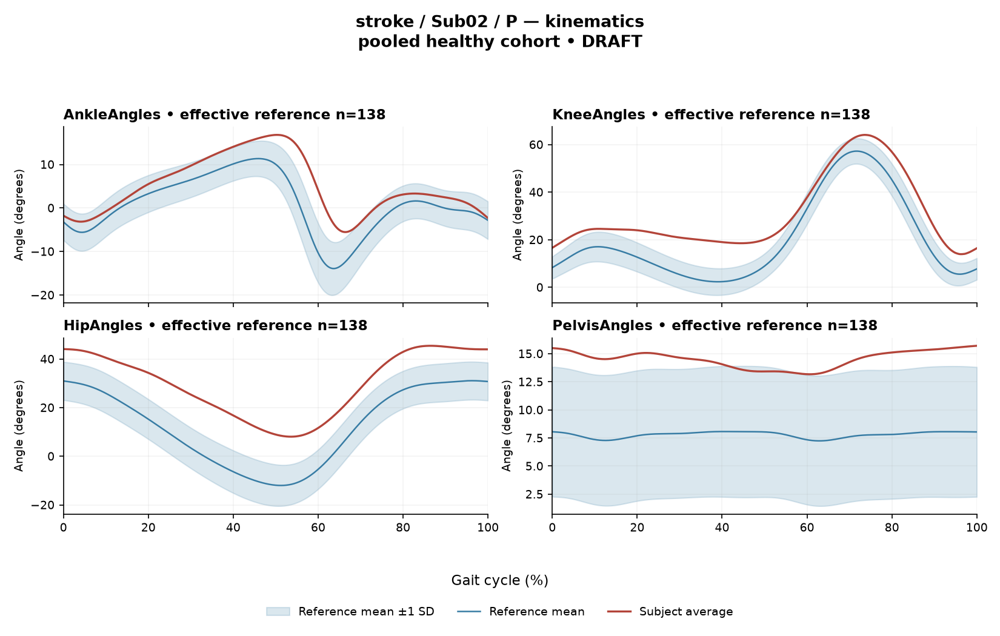

rater2 / Report 6 of 105 / Review spreadsheet row 7
R31D0B47CA4DF36CF
Case: stroke_Sub02_P
Read this report independently. Record judgments in the workbook. Browser pages do not save ratings.
Report: exact saved text
# Gait Report Interpretation — Sub02_P
**Version:** limited-evidence-v3.1-candidate
**Scope:** Research interpretation of a supplied quantitative summary. This is not a diagnosis, not a severity grading, and not a basis for treatment selection.
---
## 1. Objective Findings
**Participant and side.** Sub02_P is a member of the stroke cohort; all data below describe the **paretic** side. The released cycle runs from initial contact of the paretic limb (0%) to the next initial contact of the same limb (100%); these are two successive occurrences of the same event, not a single instant. No intermediate event (including toe-off) is supplied, so every timing statement below is expressed as a percentage of the analysis cycle only.
**Spatiotemporal values as supplied:**
| Measure | Value |
|---|---|
| Gait speed | 0.91 m/s |
| Cadence | 117.2 steps/min |
| Step length symmetry index (successive-footfall definition) | −6.6% |
| Composite kinematic deviation score (GPS-like, sagittal RMS of GVS) | 11.33 |
The negative symmetry index indicates that, under the successive-footfall definition, the **paretic step is the shorter of the two** by this index value. The instantaneous-heel definition can yield a different number for some subjects and was not the definition used here; the two values are not interchangeable.
The speed label ("full community ambulator, >0.8 m/s") denotes a **speed band only**. It does not represent measured walking independence, safety, endurance, or real-world community mobility, and none of those were assessed in this input.
**Reference used.** Kinematic deviation is referenced to 138 pooled healthy subjects across 1001 phase points (main_cohort_excel), pooling both body sides and all ages. This reference is not age- or speed-matched to this participant. At 0.91 m/s the participant falls inside the overall healthy self-selected speed span (0.80–1.79 m/s), but **falling inside an overall range does not establish that an appropriately matched reference subgroup exists** for this subject. Any difference from the reference is therefore a difference from a pooled, unmatched comparison group — it cannot by itself isolate or establish a stroke-specific effect, a mechanism, or a clinical diagnosis.
**Channels present.** Sagittal ankle, knee, hip and pelvis kinematics; averaged EMG envelopes for GAS, RF, VL, BF, ST, TA, ERS on the paretic side; two co-contraction indices.
**Not supplied in this input (distinct from documented absence):** coronal- and transverse-plane kinematics (excluded by the metric definitions); individual toe-off and any matched muscle-specific normal timing bands; stride-to-stride variability; raw-signal quality checks or expert plots; non-paretic-side EMG or kinematics; age, sex, time post-stroke and stroke clinical scores (these last apply to the stroke cohort in the release but were not provided here). Absence from this summary must not be reported as absence from the source dataset.
---
## 2. EMG Envelope and Threshold Findings
**How these numbers must be read.** The curves are **ensemble-averaged envelopes**. Normalization uses a shared maximum across available strides before averaging, participant-, side- and muscle-specific in the checked stroke release, with no further amplitude normalization in this pipeline. Consequently:
- Peak normalized amplitudes (0.61–0.76 here) are **relative envelope values** on each muscle's own scale. They are not neural drive, force or strength, they cannot be ranked across muscles, and they cannot be compared between sides.
- "Above-threshold intervals" are regions where the **averaged** envelope exceeds 20% of that same curve's peak, with a minimum retained interval of 3% of the cycle. They are properties of the mean envelope under this rule — **not** physiological onset, offset, contraction duration, continuous contraction, or inactivity outside the interval, and **not** evidence that every individual stride behaved this way.
- Because no toe-off or phase boundary is supplied, no interval is assigned to stance, swing, loading response, mid-stance or pre-swing, and no interval is labelled normal, early, delayed or prolonged. Anatomical actions may be named, but no interval is mapped to a functional role such as clearance, push-off or weight acceptance.
| Muscle | Retained interval(s), % cycle | Coverage | Peak (rel.) | Max abs z (location, direction) |
|---|---|---|---|---|
| GAS (ankle plantarflexor/knee flexor) | 2–48; 63–75 | 57% | 0.65 | 5.8 at 70%, above reference |
| RF (hip flexor/knee extensor) | 84–70 (wraps boundary) | 86% | 0.66 | 2.9 at 93%, above |
| VL (knee extensor) | 40–62; 85–22 (wraps) | 60% | 0.67 | 1.9 at 16%, above |
| BF (knee flexor/hip extensor) | 65–71; 77–15 (wraps) | 44% | 0.76 | 2.9 at 86%, above |
| ST (knee flexor/hip extensor) | 81–30 (wraps) | 49% | 0.65 | 2.3 at 7%, above |
| TA (ankle dorsiflexor) | 52–79; 89–29 (wraps) | 68% | 0.61 | 1.4 at 80%, below |
| ERS (erector spinae) | 44–34 (wraps) | 90% | 0.71 | 5.5 at 91%, above |
**Boundary continuity.** For RF, VL, BF, ST, TA and ERS the mean envelope remains above its own 20% threshold **across the 0%/100% cycle-defining boundary** — i.e., the retained interval wraps rather than terminating at the initial-contact boundary. This is a mean-envelope continuity statement at that boundary only. GAS has an onset at 2%, numerically close to the initial-contact boundary; this proximity is descriptive and does not establish an event-locked physiological onset.
**Sub-threshold regions.** Each muscle's coverage leaves a remainder of the cycle below its own threshold (e.g., ERS 90% coverage with the mean envelope below threshold between the retained interval endpoints at 34% and 44%). Coverage values are reported as supplied; a rounded coverage figure alone would not establish that no below-threshold segment exists, and no such claim is made here. Sub-threshold does not mean electrically silent or non-functional.
**Standardized differences (max |z|).** Max |z| is an **extreme-value statistic** over all 1001 phase points, not a single-observation z-score, and the conventional 2-SD rule does not apply. In this dataset every one of 109 healthy controls exceeds |z| = 2 on at least one muscle, and per-muscle healthy 95th percentiles for this statistic run from 3.65 (ERS) to 4.61 (TA), higher still under leave-one-out. Against that:
- **GAS 5.8** exceeds the upper end of the supplied per-muscle 95th-percentile span (4.61), and **ERS 5.5** exceeds the ERS-specific 95th percentile of 3.65. These are the two largest standardized differences in this record.
- RF (2.9), BF (2.9), ST (2.3), VL (1.9) and TA (1.4) all fall below the lowest supplied per-muscle 95th percentile (3.65).
The location of a max |z| (e.g., 70% for GAS, 91% for ERS) is the **phase point of largest standardized difference from the phase-specific reference mean**, not necessarily the time of peak envelope amplitude and not a gait event. "Above reference" means above the reference mean at that phase point — not above a healthy percentile limit. Because the reference is pooled and unmatched, and because envelope shape and these z-values depend on the normalization and envelope pipeline, an elevated value identifies a difference from this particular reference; it does not establish abnormal physiology, a lesion effect, or a clinical finding.
**Co-contraction indices.** CCI is the Falconer–Winter whole-cycle overlap index of the normalized envelopes (2 × common area / summed areas). It is a whole-cycle index, not simultaneous activation time, not muscular force, and not a phase-specific result; it can be non-zero even where detected intervals do not overlap, because sub-threshold activity contributes.
- **TA vs GAS = 0.53** — inside the supplied healthy interval (0.24–0.59), above the supplied median of 0.39 and closer to the upper endpoint.
- **RF vs BF = 0.67** — inside the supplied healthy interval (0.48–0.83) and close to the supplied median of 0.68.
Lying inside these intervals does **not** establish physiologically normal co-activation or normal muscle function; lying outside would not establish pathological co-activation, stiffness, impaired motor control or a diagnosis. These values are method-dependent and must not be compared with CCI values or thresholds from other studies or algorithms.
**Audit note.** The local array audit verified 614 evaluable participant/side/muscle combinations of 700; 86 lacked valid nonzero paired samples. This is dataset-level context and is not a statement about this participant's channels, whose values are supplied above.
---
## 3. Kinematic and Reference Comparisons
All kinematic values are **sagittal plane only**; coronal and transverse motion are outside this dataset and no statement about them is possible.
| Joint (sagittal) | ROM | Gait Variable Score |
|---|---|---|
| Ankle | 22.3° | 5.53 |
| Knee | 50.1° | 11.07 |
| Hip | 37.4° | 17.74 |
| Pelvis | 2.5° | 6.77 |
**Composite (GPS-like) = 11.33.** This is the RMS of the four sagittal GVS values — not the validated 9-variable GPS — and is therefore not interchangeable with published GPS figures. Against the supplied calibration values (median 5.1, 95th percentile 10.7), this subject's composite is above the median and above the 95th-percentile value. Those calibration figures are **pooled percentiles**, not matched leave-one-out normal limits for this participant, so exceeding them describes the magnitude of difference from a pooled unmatched reference and does not by itself establish a clinical abnormality, a severity grade, or statistical significance.
**Within the composite,** the largest single-joint contribution is the hip (GVS 17.74), followed by the knee (11.07), pelvis (6.77) and ankle (5.53). GVS is a summary root-mean-square difference from the reference waveform across the cycle: it **does not localize the difference to any phase of the cycle and does not indicate direction** (e.g., more flexion versus more extension). No direction or phase attribution should be read into these values.
**ROM values are reported as measured.** ROM alone does not establish a clinical restriction or excess in the absence of an appropriate matched comparison, and no such matched ROM limits are supplied here. This applies to the small sagittal pelvic excursion (2.5°) as much as to the other joints: it is a reported magnitude, not a documented restriction.
**Comparability limit (applies to Sections 2 and 3 alike, and would apply equally to a control subject).** The reference is a pooled healthy sample not matched to this participant on age or speed. Differences from it are differences from that reference. They conflate any effects of this participant's walking pattern, speed, anthropometry and measurement pipeline with any stroke-related control changes, and these cannot be separated from the data supplied. Healthy-group membership would not prove normal physiology, and deviation from an empirical reference does not by itself establish disease.
---
## 4. Questions for Further Clinical Assessment
These are open questions raised by the limits of this summary. None presupposes that the mechanism or measurement issue in question has been observed, and none implies a treatment.
1. **Event definition.** Are individual toe-off timings and stride event markers available in the release for this participant? Without them, all EMG intervals here remain percentage-of-cycle descriptions and cannot be related to stance/swing subdivisions.
2. **Stride-level behaviour.** Can stride-by-stride envelopes (rather than the ensemble average) be examined, to determine whether the wrapped, boundary-continuous intervals seen in the mean envelope reflect a consistent pattern across strides or arise from averaging across differing strides?
3. **Signal quality.** Have raw-signal quality checks (baseline noise, movement artifact, crosstalk — e.g., between adjacent thigh channels, or between ERS and trunk motion artifact) been performed for this recording? The high-coverage, high-|z| ERS and GAS channels are the ones for which such a check would most change interpretation.
4. **Normalization dependence.** Would an alternative amplitude normalization (e.g., a task- or reference-contraction denominator) alter the 20%-of-peak interval structure and the CCI values, given that both the threshold and the overlap index depend on the shared-maximum denominator used here?
5. **Reference matching.** Is a speed- and age-matched healthy subgroup, or a leave-one-out reference, obtainable for a 0.91 m/s comparison? That would clarify how much of the composite score of 11.33 and the GAS/ERS standardized differences reflects reference mismatch.
6. **Contralateral data.** Are non-paretic-side kinematics and EMG available? Note that the released EMG denominator is side-specific, so any between-side amplitude comparison would require an explicitly stated, comparable normalization.
7. **Out-of-plane motion.** Is a coronal/transverse dataset available, given that the present composite and all ROM values are sagittal-only?
8. **Clinical context.** Are age, sex, time post-stroke and stroke clinical scores retrievable from the release for correlation with these measures? They were not supplied in this input.
9. **Step-length definition.** Would the instantaneous-heel definition of step length reproduce the −6.6% asymmetry direction and magnitude for this subject, or does the value depend materially on the definition used?Requirements for this report
Fill the corresponding Coverage rows in the workbook. G03 is included once. These are the approved requirements, not prefilled judgments.
| Excel row | ID | Required content | Components / optional content |
|---|---|---|---|
| 28 | R007 | Describe walking speed 0.91 m/s and that it is within the stated reference speed range; this does not establish individual matching. | AND: displayed speed and that it lies within the supplied 0.80-1.79 m/s span AND that an in-range speed does not establish an individually matched reference. Optional: position within the span (lower part). One sentence may also serve the comparability half of G03. |
| 29 | R008 | Identify hip AND knee as the principal sagittal joint-curve differences. Exact GVS values are optional. | AND: hip AND knee. Stating which joint is larger is optional; asserting the reverse order is an error. Exact GVS values are optional; no waveform direction, phase or restriction is required. Pelvis and ankle optional. |
| 30 | R009 | Describe EITHER GAS envelope above its phase-specific reference mean at approximately 70% of the analysis cycle (displayed max |z| 5.8) OR ERS envelope above its phase-specific reference mean at approximately 91% of the analysis cycle (displayed max |z| 5.5). One complete muscle-specific route is sufficient. Within each route, muscle identity AND mean-relative direction AND approximate cycle location are required. Exact max-|z| repetition is optional. | OR: one complete route suffices. Required for each route: muscle identity AND direction relative to the phase-specific reference mean AND approximate cycle location. Optional: exact max |z| value, comparison with the supplied endpoint span (descriptive only). Prohibited: percentile classification, gait phase, physiological onset, severity. |
| 31 | R012 | Describe the supplied successive-footfall step-length index -6.6% and its meaning: the paretic step is shorter. | AND: displayed index and the direction supported by its sign. Optional: formula, definition wording. Acceptable phrasing for small displayed values: "a small difference with the paretic step slightly shorter/longer" (not a cutoff). Prohibited: restating the index as a percentage shortening (E01), severity grades, whole-gait symmetry generalization (E07 issue, not an omission). |
| 32 | G03 | Express a meaningful limitation of reference comparability AND why the comparison cannot establish disease effects or clinical diagnosis; for controls it cannot establish disease or overall normality. One statement may also support a case requirement. | AND: comparability and inference limitations |
Exact model input: system instruction
Draft a research gait-report interpretation for a physical therapist or physiatrist using only the supplied quantitative summary. This is a limited-evidence interpretation task, not diagnosis or treatment selection. Rules: - Describe the participant's actual group and side, available findings, and missing channels accurately. Healthy-group membership does not prove normal physiology; deviations from an empirical reference do not by themselves establish disease. - Treat detected EMG intervals and coverage as properties of an averaged envelope under the stated threshold and duration rule. Do not convert them into physiological onset, offset, duration, continuous contraction, or inactivity outside the intervals. You may describe reported coverage, retained intervals and boundary continuity at the mean-envelope level. Do not infer the same pattern in every individual stride. Say no below-threshold segment only when the supplied evidence establishes that; a rounded coverage value or no retained interval alone does not establish it. - Individual toe-off and matched muscle-specific timing references are not supplied in this task. Use percentages of the analysis cycle. When the input explicitly identifies an initial-contact boundary, you may name that boundary or describe numerical proximity to it. Do not assign stance/swing, loading response, pre-swing, mid-stance or another event to a percentage, or substitute a conventional 60% split. Anatomical muscle actions may be named, but do not map an interval to a gait-phase function such as clearance, push-off or weight acceptance. Do not characterize timing as normal, early, delayed or prolonged without the required evidence. - Respect the supplied normalization method. Relative envelope amplitude is not strength or force, and average curves do not establish stride-to-stride variability. - Report CCI as a whole-cycle overlap index of normalized EMG envelopes. You may compare it with the supplied empirical interval or a supplied median, including proximity to an endpoint. Do not invent an unavailable median. Being within that interval does not establish physiologically normal co-activation or normal muscle function; being outside it does not establish pathological co-activation, stiffness, impaired control or a diagnosis. CCI is not simultaneous activation time, muscular force or a phase-specific result. It depends on normalization and envelope methods; do not transfer values or thresholds from other studies or algorithms. - Describe GVS and GPS-like as summary differences from the stated reference. Neither localizes waveform direction or phase; ROM alone does not establish a clinical restriction without an appropriate comparison. Do not treat pooled calibration percentiles as matched leave-one-out normal limits. - Where using a reference comparison, convey both limited comparability and the inability to establish a disease effect or clinical diagnosis from that comparison. One clear explanation per report is enough; age and speed need not be recited as separate checklist words. A speed inside an overall range does not prove that an appropriate matched reference exists. Apply these limits to controls as well. - The location of maximum |z| is the largest standardized difference from the reference, not necessarily the time of peak envelope amplitude or a gait event. Above/below reference in an EMG row means relative to the phase-specific reference mean at that location, not relative to a healthy percentile limit. - Preserve numerical direction and the displayed precision. Do not invent values, clinical severity grades, statistical significance, or unavailable reference values. Descriptive comparisons with supplied values remain allowed. Near-boundary rounded values do not justify classifying hidden unrounded values. - Clinical follow-up questions may ask whether a mechanism or measurement issue exists; do not presuppose it has already been observed. Do not recommend treatment. If EMG is unavailable, section 2 may simply state that envelope timing, amplitude and CCI cannot be assessed. Reference-only plots do not provide patient EMG. Use exactly these four sections: 1. Objective Findings 2. EMG Envelope and Threshold Findings 3. Kinematic and Reference Comparisons 4. Questions for Further Clinical Assessment
Exact model input: case summary
Candidate interpretation version: limited-evidence-v3.1-candidate
Draft the four-section report using only this subject's supplied evidence.
Metric definitions (read before interpreting any number below):
- All joint angles and ROM values are SAGITTAL PLANE only. Coronal/transverse data are not included.
- The released EMG curves are ensemble-averaged envelopes. For each participant and recorded muscle, normalization uses a shared maximum across the available strides before averaging; individual strides are not independently rescaled to their own peaks. This pipeline uses the released mean curves without further amplitude normalization. In the checked stroke release, the denominator is participant-, side-, and muscle-specific; it is not shared between sides. The local array audit verified 614 evaluable combinations, not all 700; 86 lacked valid nonzero paired samples. Amplitudes are relative envelope values, not absolute neural activation, force, or strength. Do not rank muscles as stronger or weaker from these amplitudes, or infer stride-to-stride variability from an average curve.
- Above-threshold intervals are the regions where the averaged envelope exceeds 20% of that curve's own peak, minimum retained interval 3% of the cycle (by sample count). An interval written as (X%-Y%) with X > Y wraps across the 100%->0% cycle boundary (envelope remains above threshold across the cycle-defining event). An onset of 0% is the analysis-window boundary, not necessarily a physiological onset. "No interval detected" means no region met the threshold + duration criteria; it does NOT mean the muscle is inactive or non-functional.
- CCI is the Falconer-Winter co-contraction index computed on the full continuous envelopes (2*common area / summed areas), so it can be non-zero even when the DETECTED burst intervals of the pair do not overlap (sub-threshold activity contributes).
- The composite kinematic deviation score is the RMS of the per-joint Gait Variable Scores over the sagittal channels provided ("GPS-like", not the validated 9-variable GPS).
- Step length symmetry index: 200*(paretic - non-paretic)/(paretic + non-paretic), in %. NEGATIVE means the paretic-side step is SHORTER. Two operational step-length definitions exist (successive-footfall: each heel's position at its own initial contact; instantaneous: both heels at the same instant) and give different values for some subjects -- the definition actually used is stated next to the symmetry value.
- "Max |z| deviation" is the LARGEST absolute z-score across all 1001 phase points of the cycle, comparing this curve to the healthy-cohort mean/SD at each phase. This is an extreme-value statistic, NOT a single-observation z-score: in this dataset every one of 109 healthy controls exceeds |z| = 2 on at least one muscle, and per-muscle healthy 95th percentiles for this statistic run 3.65 (ERS) to 4.61 (TA) -- higher still under leave-one-out. Do not label a value abnormal by the conventional 2-SD rule; use the healthy reference range given per muscle where provided.
- Healthy-cohort CCI reference (this dataset): RF-vs-BF median 0.68 (2.5th-97.5th pct 0.48-0.83); TA-vs-GAS median 0.39 (0.24-0.59). Composite score reference: median 5.1, 95th percentile 10.7.
- COHORT BACKGROUND (calibration context, not necessarily the exact reference used for this subject -- the actual reference composition is stated in a dedicated line with the subject data below): the full healthy cohort is 138 subjects for kinematics, effective n = 106-109 per muscle for EMG (29 controls have no usable EMG; completeness varies by age), pooling both body sides and all ages; it is not age- or speed-matched to this subject. A leave-one-out run uses one subject fewer than these counts.
- SPEED SUPPORT LIMIT (applies to most stroke subjects in this dataset): the healthy reference cohort's self-selected walking speeds span 0.80-1.79 m/s. If this subject's gait speed is below 0.80 m/s, NO speed-matched healthy reference exists in this dataset -- 41 of the 50 stroke subjects are below that floor. Deviations from the reference then conflate slow-walking effects with stroke-specific control changes, and the two cannot be separated from these data. Describe deviations from the reference as such; do not attribute them wholly to stroke pathology.
- Additional source fields are outside this input. Age, sex and gait events may be available in the release; time post-stroke, stroke clinical scores and a non-paretic-side designation apply only to the stroke cohort, as applicable. Do not claim every listed field exists for every participant. Distinguish not supplied, not applicable and documented absent recordings.
The released paretic-side cycle runs from initial contact of that limb at 0% to its next initial contact at 100%. The cycle boundary may be called initial contact; the endpoints are successive occurrences, not one instant. No intermediate event or phase boundary is supplied.
Model-visible information boundary: the summary contains mean-curve metrics and algorithm-detected intervals, not individual toe-off, matched normal muscle timing, stride-level variability, raw-signal quality checks, or expert plots. Information not supplied here must not be described as absent from the source dataset. Gait-cycle percentages alone do not identify gait phases.
Subject: Sub02_P (group: stroke, affected side: paretic)
Gait speed: 0.91 m/s (full community ambulator (>0.8 m/s)) [The ambulation label denotes a speed band only, not measured walking independence, safety or real-world community mobility.]
Cadence: 117.2 steps/min
Step length symmetry index: -6.6% (step-length definition: successive_footfall)
Composite kinematic deviation score (GPS-like): 11.33
Deviation reference actually used for this subject: 138 healthy subjects (pooled), 1001 phase points, source: main_cohort_excel.
EMG envelope findings:
- GAS: above-threshold interval(s) 2%-48%; 63%-75%, 57% of cycle above threshold, peak normalized amplitude 0.65, max |z| vs healthy reference: 5.8 (above reference, at 70% of cycle)
- RF: above-threshold interval(s) 84%-70% (wraps cycle boundary), 86% of cycle above threshold, above threshold across cycle boundary, peak normalized amplitude 0.66, max |z| vs healthy reference: 2.9 (above reference, at 93% of cycle)
- VL: above-threshold interval(s) 40%-62%; 85%-22% (wraps cycle boundary), 60% of cycle above threshold, above threshold across cycle boundary, peak normalized amplitude 0.67, max |z| vs healthy reference: 1.9 (above reference, at 16% of cycle)
- BF: above-threshold interval(s) 65%-71%; 77%-15% (wraps cycle boundary), 44% of cycle above threshold, above threshold across cycle boundary, peak normalized amplitude 0.76, max |z| vs healthy reference: 2.9 (above reference, at 86% of cycle)
- ST: above-threshold interval(s) 81%-30% (wraps cycle boundary), 49% of cycle above threshold, above threshold across cycle boundary, peak normalized amplitude 0.65, max |z| vs healthy reference: 2.3 (above reference, at 7% of cycle)
- TA: above-threshold interval(s) 52%-79%; 89%-29% (wraps cycle boundary), 68% of cycle above threshold, above threshold across cycle boundary, peak normalized amplitude 0.61, max |z| vs healthy reference: 1.4 (below reference, at 80% of cycle)
- ERS: above-threshold interval(s) 44%-34% (wraps cycle boundary), 90% of cycle above threshold, above threshold across cycle boundary, peak normalized amplitude 0.71, max |z| vs healthy reference: 5.5 (above reference, at 91% of cycle)
Co-contraction indices:
- TA_vs_GAS: CCI = 0.53
- RF_vs_BF: CCI = 0.67
Joint kinematic findings (sagittal plane):
- AnkleAngles: range of motion 22.3 deg, Gait Variable Score 5.53
- KneeAngles: range of motion 50.1 deg, Gait Variable Score 11.07
- HipAngles: range of motion 37.4 deg, Gait Variable Score 17.74
- PelvisAngles: range of motion 2.5 deg, Gait Variable Score 6.77Reference context for expert review
# Reference context: stroke/Sub02_P Mean/SD reference: 138 controls; method pooled; exclusions: []. Effective reference counts: GAS=109, RF=108, VL=109, BF=106, ST=108, TA=107, ERS=106, AnkleAngles=138, KneeAngles=138, HipAngles=138, PelvisAngles=138. The exact system and user input files define what the model receives. The EMG and kinematic plots are supplementary expert evidence, not model inputs. The plotted mean plus/minus one SD is descriptive, not a clinical normal band. Negative lower EMG bands can result from mean minus SD; they do not imply negative recorded EMG. The max-|z| p95 span in the input is pooled calibration context. Complete muscle-specific LOO thresholds are not supplied; an appropriately indeterminate classification is allowed. Controls are excluded from their own mean/SD reference, but cohort-level calibration has prior reference-data reuse. It is not an independent matched clinical limit. GPS-like is a four-channel sagittal composite, not the validated nine-variable GPS. The pooled median/p95 background is not a matched LOO normality boundary. CCI uses continuous normalized envelopes over the whole analysis cycle. An empirical interval comparison does not establish normal muscle function. Threshold intervals and rounded coverage describe the averaged envelope. Rounded 100% coverage and one interval do not prove absence of short below-threshold gaps. Use the group-specific cycle and normalization provenance in the actual input. No individual intermediate gait events or matched normal muscle timing are supplied. Administrative age and published bilateral speed are not added to this input. Expert-visible plots do not justify requiring unseen direction, phase or morphology. For a new-case requirement, cite exact input evidence. Select clinically useful descriptive content without inferring a diagnosis or severity from rank alone.
EMG and kinematic curves
The curves are supplementary expert evidence. Only the saved text inputs were supplied to the model; do not require curve-only observations.
EMG

Kinematics
